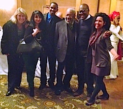
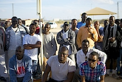

Friends
How much can we change on our own?
Last Spring, after years of organizing in the United States through FOR and other movements, I accepted a request to serve as the International Coordinator of the global expression of the Fellowship of Reconciliation, IFOR.
It was an honor to take this leadership role in IFOR, although a difficult decision to make as I watched demonstrations at home against the racism and militarization of U.S. police departments. However, as protests spread across the U.S., I saw from afar how people around the world recognized the relationship between this struggle and their own.
I said Yes to this opportunity to support the global Fellowship because our worldwide efforts for peace and nonviolent justice are all connected.
Please join me in saying Yes to our global Fellowship with a gift to IFOR today.
(Please note that your gift is in honor of IFOR.)
I recall how my work with the King Center Imaging Project enabled me to read the correspondence between Dr. King and foreign leaders and activists. I am rooted in the work of beloved mentors like Ndugu T'Ofori Atta and Dr. Vincent Harding.
These veterans of hope helped me to understand with more depth the global implications of the struggle for a better United States. They demonstrated to me the importance of standing with those working to change their own countries while we work together for a transformed world.
Among the distinctions of IFOR is that, since its founding 100 years ago, no member of our community anywhere in the world stands alone.
Whether individual activists, small groups of people, or affiliate organizations, the International Fellowship of Reconciliation -- present in 40 different countries -- is organized for the specific purpose of supporting and equipping the collective effort to dismantle injustice and build peace, everywhere.
The International Secretariat, based in the Netherlands, is charged with facilitating the communication and relationship between branches as well as the international representation at the United Nations and other global institutions. This is a tremendous task in our violent world, and an essential task in the efficacy of our movement.
We need your help! Please make a gift today to support the International FOR.
(Please note on your check or online donation that your gift is in honor of IFOR.)
In recent months, I've worked to help connect the struggles for dignity across the Atlantic Ocean. While thousands were still in the streets in Ferguson and many other cities across the U.S., FOR's Freeman Fellow, Rev. Osagyefo Sekou was able to Skype with a room of about one hundred or more young people who had been victims of police harassment in Belgium. The conference titled "Racisme et violences policières" was sponsored by the Belgian Branch of the International Fellowship of Reconciliation, Agir Pour La Paix. It provided an important opportunity for a young, largely Muslim crowd, the children of Arab and African immigrants, to express their frustration with the persistent harassment and demeaning treatment at the hands of Belgian police.
While in the university auditorium in Brussels, thousands of miles away, FOR India provided training for hundreds of women giving them the tools they sought to challenge the bigotries and prejudice that contribute to the disempowerment of women in India and around the world.
In the Philippines, IFOR's branch launched a program to provide solar panels to community leaders. AKKAPKA-CANV's leadership recognized that one cannot work for nonviolence while ignoring the impact that poverty has on the decisions we make. The Filipino branch is not only providing trainings in nonviolence but attempting to provide a means to an income for many of its members in need.
During the 28th session of the Human Rights Council, IFOR used its consultative status at the UN to give voice to Human Rights Concern-Eritrea who offered testimony before the council about the ongoing human rights crises in Eritrea. Last October, I learned firsthand from Eritrean refugees who had fled the repression of their government. These men had chosen to flee to Israel, hoping that they would find refuge and safety. Instead, they experienced racist attacks, persistent harassment and now large numbers of refugees are imprisoned in Israel's Holot detention center in the Negev desert.
IFOR branches around the world continue to engage in a variety of efforts to end Israel's occupation of the West Bank and Gaza Strip and call attention to the crises facing millions of Palestinian families. One of the leaders of IFOR's branch in Israel, Amos Gvirtz, is currently touring the U.S. sharing his experiences over many years of work against the occupation and his efforts to provoke the conscience of fellow Israelis and raise awareness about the cruel and inhumane actions of his government.
IFOR is a global movement of organizations and individuals.
In order for us to experience the meaning of an International Fellowship, we need coordination. In order for us to be an effective force against the globalization of militarism, the environmental crises, and the persistent threat of nuclear weapons, we have to be an organized and coordinated movement.
We need staff who can share the work and facilitate connections between the 72 member organizations and the many activists on the ground whose lives are at risk. We need the resources to coordinate our volunteer representation at the United Nations and we need the capacity to develop trainings and support the many nonviolent efforts to change our world.
We need your help! Please consider a contribution to support the coordinating work of IFOR.
(Again, please note that your gift is in honor of IFOR.)
Thank you for your prayers, and for your support.
Sincerely,
Lucas L. Johnson
International Coordinator
International Fellowship of Reconciliation
Photos: Lucas (2nd from right) with Dr. Vincent Harding (center), students from the IFOR Fellowship School, and FOR-USA's executive director Rev. Kristin Stoneking (left). Lucas (front, center) with Eritrean refugees in the Negev Desert, courtesy of Anthony Grimes. |